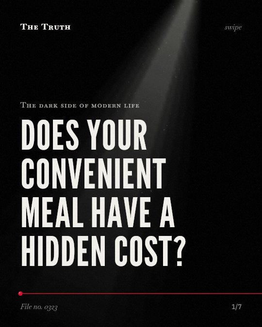

The dark side of modern life
Does your convenient meal have a hidden cost?

No study shows ultra-processed foods provide health benefits.
Research consistently links these foods to metabolic dysfunction and systemic inflammation across all life stages. There is no evidence of any beneficial health outcomes.
Established. Several studies combined, or official data. The evidence backs this.
What the research found
Higher intake of ultra-processed foods is linked to reduced grip strength, slower gait speed, elevated inflammatory markers (CRP, IL-6, TNF-α) and lower muscle mass indices (MMI, AMMI).
“A dose-dependent relationship was evident, with higher UPF intake linked to reduced grip strength, slower gait speed, elevated inflammatory markers (CRP, IL-6, TNF-α) and lower muscle mass indices (MMI, AMMI).”
Systematic review, 2025. Kanbay et al., Journal of Human Nutrition and Dietetics.
Dietary patterns rich in ultra-processed foods may contribute to low-grade systemic inflammation and early metabolic dysfunction in children and adolescents.
“Emerging evidence suggests that dietary patterns rich in UPF may contribute to low-grade systemic inflammation and early metabolic dysfunction in children and adolescents.”
Systematic review, 2026. Porri et al., Nutrients.
High ultra-processed food intake is linked to higher levels of liver biomarkers related to non-alcoholic fatty liver disease in older adults with overweight/obesity and metabolic syndrome.
“In multivariable models, each 10% daily increment in UPF consumption in 1 year was associated with significantly greater FLI (β 1. 60 points, 95% CI 1. 24;1. 96 points) and HSI (0. 43, 0. 29; 0. 57) scores (all p-values < 0. 001).”
Observational study, 2022. Konieczna et al., Nutrients.
Most of the latest findings have revealed an adverse impact of high ultra-processed food consumption on metabolic health, including cardiovascular diseases and mortality.
“Most of the latest findings have revealed an adverse impact of high UPF consumption on metabolic health, including cardiovascular diseases and mortality.”
Review, 2020. Miranda et al., Current Opinion in Lipidology.
No study reported an association between ultra-processed foods and beneficial health outcomes.
“No study reported an association between UPF and beneficial health outcomes.”
Review, 2020. Elizabeth et al., Nutrients.
Ultra-processed foods affect your metabolic health.
High intake is linked to elevated inflammatory markers like CRP and IL-6. It is also connected to cardiovascular diseases, mortality, and liver biomarkers related to fatty liver disease.
Your diet may be altering your internal biology.
The consistent link between these foods and systemic inflammation suggests that your daily intake contributes to early metabolic dysfunction and reduced muscle mass.
This part is our reading of the evidence, not a finding.
A pre-packaged meal on a Tuesday night.
You sit in your kitchen and open a plastic container. You eat a meal designed for convenience, unaware of the inflammatory markers it may be triggering in your body.
The honest summary
The evidence consistently links high ultra-processed food consumption to metabolic issues and inflammation, though many studies are observational and require further research to confirm causality.
Direct evidence on ultra-processed food consumption remains limited, and many findings rely on indirect evidence or observational studies.
What are you feeding your cells?
Sources
- Leonie Elizabeth, Priscila Pereira Machado, Marit Kolby Zinöcker et al. (2020). Ultra-Processed Foods and Health Outcomes: A Narrative Review. Nutrients. Review, cited 985 times.
- Debora Porri, Malgorzata Gabriela Wasniewska, Alessandra Li Pomi et al. (2026). The Influence of Ultra-Processed Foods on Inflammation and Metabolic Health in Pediatric Obesity: A Systematic Review with a Narrative Synthesis. Nutrients. Systematic review, cited 5 times.
- Renata Costa de Miranda, Fernanda Rauber, Renata Bertazzi Levy (2020). Impact of ultra-processed food consumption on metabolic health. Current Opinion in Lipidology. Review, cited 80 times.
- Mehmet Kanbay, Sama Mahmoud Abdel‐Rahman, Mustafa Güldan et al. (2025). The Impact of Ultra‐Processed Food Consumption on Frailty and Sarcopenia: A Systematic Review. Journal of Human Nutrition and Dietetics. Systematic review, cited 16 times.
- Jadwiga Konieczna, Miquel Fiol, Antoni Colom et al. (2022). Does Consumption of Ultra-Processed Foods Matter for Liver Health? Prospective Analysis among Older Adults with Metabolic Syndrome. Nutrients. Observational study, cited 49 times.
Also read for this file, not quoted
- Khalil & Zaitoon (2026). Ultra-Processed Foods and Pediatric Metabolic Health.
This file was researched and drafted by software, then checked by rules a model cannot talk its way around: each quote above was matched word for word against the paper, and every number had to appear in it. How files are made.